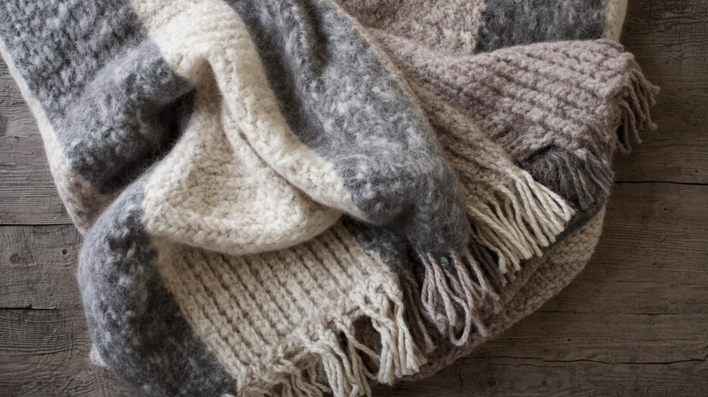

ぬくもりをまとえる「ブランケット（ひざ掛け）」
朝晩のひんやりした空気に寄り添ってくれる、ふんわり温かなブランケット。
ウールやフランネル、チェック柄など秋らしい素材は、お部屋にも季節の色を添えます。
読書やデスクワークのお供にもぴったりです。
プレミアム・ブランケット「Nordic Embrace」
Hearth&Co.独自のカシミヤタッチ加工により滑らかな肌触り。
インテリアに溶け込むデザインで人気のアースカラーシリーズ
The Hygge
「空気の層」をまとう特殊なダブルフェイス織りを採用し、ダウンのような保温性を実現。
ボタン付きでポンチョにもなる2way仕様

NUKU
ウール調の素材感で、ぬくもりと上質感を両立。 ひざ掛けとしても、肩掛けとしても使える万能さが特徴
Cocoon Air
畳んでボタンを留めればひざ掛けにもなる2WAY仕様で体をすっぽり覆えるブランケット。 蚕の繭のように守られるような安心感と柔らかな素材、北欧柄が人気のブランケット
Neutral Warm Lap
長時間のパソコン作業でも下半身の冷えをしっかりガード。 性別を問わず使える、ニュートラルなデザイン設計。集中を妨げない、静かなぬくもりを足元に